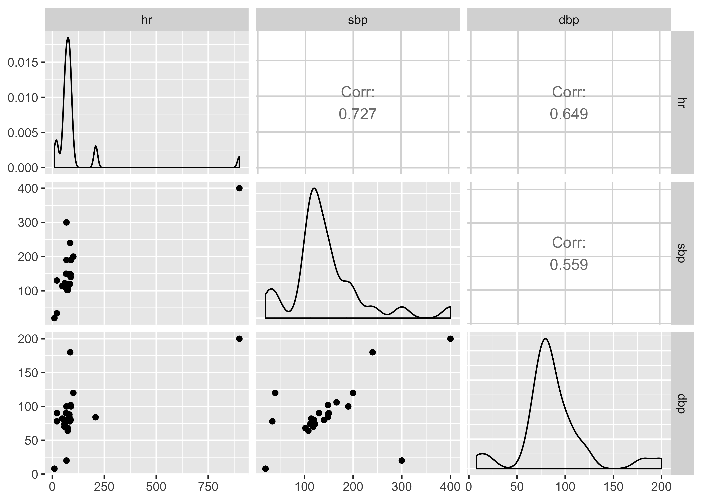

5 Data manipulation
PATNO GENDER VISIT HR SBP DBP DX AE
1 1 M 11/11/1998 88 140 80 1 0
2 2 F 11/13/1998 84 120 78 X 0
3 3 X 10/21/1998 68 190 100 3 1
4 4 F 01/01/1999 101 200 120 5 A
5 XX5 M 05/07/1998 68 120 80 1 0
6 6 06/15/1999 72 102 68 6 1# A tibble: 6 x 2
gender n
<fct> <int>
1 "" 1
2 2 1
3 f 2
4 F 12
5 M 14
6 X 1# replace lower case values in gender
pt1 <- pt1 %>%
mutate(gender = str_to_upper(gender))
# view the frequency table again
pt1 %>%
count(gender)# A tibble: 5 x 2
gender n
<chr> <int>
1 "" 1
2 2 1
3 F 14
4 M 14
5 X 1 patno gender visit hr
2 : 2 Length:31 : 7 Min. : 10.0
3 : 2 Class :character 01/01/1999: 2 1st Qu.: 60.0
6 : 2 Mode :character 11/11/1998: 2 Median : 74.0
: 1 11/13/1998: 2 Mean :107.4
1 : 1 02/02/1999: 1 3rd Qu.: 86.5
10 : 1 03/28/1998: 1 Max. :900.0
(Other):22 (Other) :16 NA's :3
sbp dbp dx ae
Min. : 20.0 Min. : 8.00 :8 : 1
1st Qu.:113.0 1st Qu.: 74.00 1 :7 0:19
Median :122.0 Median : 81.00 3 :3 1:10
Mean :144.5 Mean : 88.07 4 :3 A: 1
3rd Qu.:158.0 3rd Qu.:100.00 5 :3
Max. :400.0 Max. :200.00 2 :2
NA's :4 NA's :3 (Other):5 